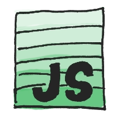

Engineering manager and developer building resilient digital products.
How I help teams
Engineering Manager
I balance product ambitions with team health, shape technical roadmaps, and create the psychological safety needed for sustainable delivery.
Experienced Developer
More than a decade of crafting web experiences, from freelancing to leading global JavaScript teams, keeps me close to the craft and detail.
No-code consultant
I design maintainable sites and internal dashboards that business stakeholders can update without touching a line of code.
Core expertise
JavaScript & Python
From data pipelines and Raspberry Pi experiments to automation bots, I rely on Python and modern JavaScript frameworks to build fast, reliable tooling.
Agile & Scrum
Certified Professional Scrum Master (PSM I) with hands-on experience guiding teams through pragmatic agile practices.
Front-end craft
I started my career on the front end, and I still design, prototype, and test interfaces that feel fast and intuitive.
Cloud environments
AWS, Azure, and GCP experience across startups and enterprise-scale workloads, focused on resilient, observable infrastructure.
Connect with me
Medium
Articles on engineering leadership, people-first practices, and the lessons I learn while building teams.
Read articlesLet's talk about your project, exchange ideas, or simply connect our professional networks.
Connect on LinkedInGitHub
Explore the open-source experiments, tooling, and prototypes that keep my skills sharp.
Browse projectsStack Overflow
Bring your technical question - I'm always happy to help debug, clarify, or share an approach.
Ask a questionOpen-source highlights
-

Rocket.Chat
Open-source platform for building secure, self-hosted chat and customer support experiences.
See project -

Wavelo scraper
A personal toolkit that scrapes Wavelo bike data to forecast availability and inform urban mobility planning.
-

ExcelJS
Node.js library for generating and parsing Excel workbooks directly from your applications.
See project -

Foxr
Automation library that gives developers headless control of Firefox for testing and data collection.
See project -

Scrapy
Python framework that powers resilient web scraping, data mining, and machine learning pipelines.
See project -

Bootstrap
Staying close to one of the most widely adopted front-end frameworks to anticipate new components and patterns.
See project -

Other personal projects
A collection of experiments and tools created for clients, collaborators, and research teams at the Jagiellonian University.
See project